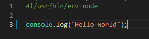
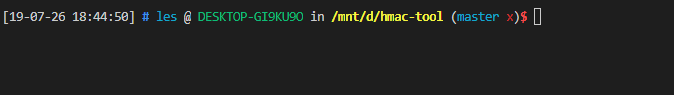

# [Node] 使用 NodeJS 製作自己的 Shell Command
# Command Line Tool, 很多語言能做到，Node 提供給你新的選擇

身為一名工程師，自己寫一些小工具是司空見慣的事情。
過往我總是使用 Perl 或是 Shell Script 進行開發。然而 Shell Script 其程式結構與可讀性總是令我痛苦不堪，而 Perl 儘管可以解決大部分問題，但並非一般人、一般電腦皆會在自己電腦中裝有 Perl 完整的 Perl Library。
隨著 NodeJs 逐漸成為顯學與前端工程的興起，大部分工程人員的電腦中都有一套 NPM ，且 Javascript 簡單易上手的特性，使得使用 NodeJS 取代 Perl 進行 Shell Command 開發成為一個不錯的選項。
最近由於專案的開發需要頻繁計算 Request Payload 的 HMAC ，於是趁此機會嘗試利用 NodeJs 撰寫 Shell Command。
# 使用 NPM 將工具打包成 Shell Command.
npm 不僅僅是 node 的依賴管理工具，它也能將 NodeJs Code 打包成 Shell Command。
首先我們先利用 npm init 建立一個新專案。並依照 NodeJS 慣例，在專案中增加 index.js 作為我們工具的腳本。
這邊要注意的是，要讓 shell 能夠直接執行我們的 JS 我們必須在程式開頭處增加這一行
1
#!/usr/bin/env node
這是告訴 Shell 說，請使用 node 來執行這支腳本。(詳情請見 Wiki )

先使用 hello world 試試看
接下來，我們在 package.json 中最上層增加一個 bin 的 Object 屬性，並且在其中定義我們的工具名稱與程式進入點 (在我們這個例子中，工具名稱為 hmac-tool)。
1
2
3
4...
"bin" : {
"hmac-tool": "./index.js"
}
如此我們就設定好 npm shell command 了。
接下來我們直接使用 npm install -g 即可將它安裝在 global 中。
未來我們便能使用 hmac-tool 作為我們的 shell script tool 囉！
1
2$ npm install -g
$ hmac-tool

# 發佈到 NPM
發佈到 NPM 也很簡單。
首先到 NPM 官網 註冊一個帳號。
之後若是第一次發佈自己的 Package 的話，請使用這個指令將自己加入 NPM
1
$ npm adduser
之後每次只要執行以下指令，即可使用 Command Line 登入。
1
npm login
接下來要真正發佈我們的 Package 了，使用以下指令。
1
npm publish
等一會兒之後，只要看到如下的訊息，即代表你發佈成功了。
1
2$ npm publish
+ hmac-tool@1.0.0
要注意的一點是，若你的 Package 名稱與別人 「撞名」 的話，它可能會顯示以下的錯誤訊息。
1
2
3
4npm ERR publish 403
You do not have permission to publish 'XXXXXXX'.Are you logged in as
the corrent user?:XXXXXXX
如果真碰到此問題，你只能另取它名了。
# 更新已發佈的 Package
更新 Package 的操作與發佈的動作其實是一樣的。
1
npm publish
只是要注意的是，每次發佈，都需要 「修改版本號」 之後才能更新。
並且依照 semver 的版本規範，亦即：版本號格式必須為
1
「大更新.中更新.小更新」